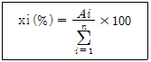

폐기물처리산업기사 (2002-09-08 기출문제)
1과목: 폐기물개론
1. 함수량이 각각 90%, 70% 인 하수슬러지를 무게비 3 : 1 로 혼합하였다면 하수슬러지의 함수량은 몇 % 인가?
- 80
- 83
- 85
- 87
(정답률: 알수없음)

2. 폐기물을 압축하여 압축하기전 부피의 1/3로 하였다면 압축비는?
- 0.3
- 0.9
- 3.0
- 9.0
(정답률: 알수없음)
3. 폐기물의 물리적 조성을 조사하는 절차 중 가장 먼저 시행하여야 하는 것은?
- 함수율측정
- 밀도측정
- 원소분석 측정
- 발열량측정
(정답률: 알수없음)
4. 쓰레기 수거능을 판별할 수 있는 MHT라는 용어에 대한 가장 적절한 표현은?
- 수거인부 1인이 수거하는 쓰레기 톤수
- 수거인부 1인이 시간당 수거하는 쓰레기 톤수
- 1톤의 쓰레기를 수거하는데 소요되는 인부수
- 1톤의 쓰레기를 수거하는데 수거인부 1인이 소요하는 총시간
(정답률: 알수없음)
5. 폐기물 발생량 예측방법 중 모든 인자를 시간에 대한 함수로하여 모델화시켜 예측하는 방법은?
- Trend법
- 다중희귀모델
- 동적예측모델
- CORAP 모델
(정답률: 알수없음)
6. 인구 1,000,000명이고, 1인 1일 쓰레기 배출량은 1.4㎏/인·일이라 한다. 쓰레기의 밀도가 750㎏/m3 라고 하면 적재량 12m3 인 트럭의 하루 운반 회수는?
- 126회
- 136회
- 146회
- 156회
(정답률: 알수없음)
7. 쓰레기 소각로 설계의 기준이 되고 있는 발열량은?
- 고위 발열량
- 저위 발열량
- 총 발열량
- 건식 발열량
(정답률: 알수없음)
8. 폐기물 압축기를 형태에 따라 구별한 것이라 볼 수 없는 것은?
- 왕복식 압축기
- 백(bag)압축기
- 수직식 압축기
- 회전식 압축기
(정답률: 알수없음)
9. 유해 폐기물을 소각할 때 발생하는 물질로서 광화학 스모그의 원인이 되는 주된 물질은?
- 일산화탄소(CO)
- 염화수소(HCl)
- 일산화질소(NO)
- 이산화황(SO2)
(정답률: 알수없음)
10. 폐기물처리 부산물인 가스를 최대한 이용하고자 할 때 폐기물 성분 중 가장 큰 영향을 미치는 성분은?
- 수소
- 질소
- 탄소
- 산소
(정답률: 알수없음)
11. 폐기물 발생량 조사 방법과 가장 거리가 먼 것은?
- 에너지수지법
- 물질수지법
- 적재 차량 계수 분석법
- 직접계근법
(정답률: 알수없음)
12. 연료 중 산소의 모든 것이 CO2 형태로 되어 있다고 가정하여 발열량을 구하는 식은? (단, 발열량을 원소분석에서 구하는 방법 기준)
- Dulong식
- Steuer식
- Kunle식
- Scheurer - Kestner식
(정답률: 알수없음)
13. 아말감, 촉매, 거울 등의 산업에 사용되며, 피부를 통한 흡수나 증기를 흡입함으로써 체내 흡수되어 그 독성이 중추신경에 강한 영향을 미치는 중금속은?
- As
- Pb
- Hg
- Cr
(정답률: 알수없음)
14. 삼성분이 다음과 같은 쓰레기의 저위발열량(kcal/kg)은?
- 약 300
- 약 700
- 약 1,000
- 약 1,300
(정답률: 알수없음)
15. 쓰레기 수거차량의 노선 결정시 유의할 사항 중 옳지 않은 것은?
- 가급적 출퇴근 시간을 피한다.
- 언덕을 오르면서 쓰레기를 적재한다.
- U자형 회전을 피한다.
- 가급적 시계방향으로 노선을 정한다.
(정답률: 알수없음)
16. 수분이 75%인 젖은 쓰레기를 풍건시켜서 수분이 60%로 되었다면 건조전 쓰레기에 비하여 중량은 얼마나 감소되었는가? (단, 쓰레기 비중은 1.0으로 가정한다)
- 7.5%
- 17.5%
- 27.5%
- 37.5%
(정답률: 알수없음)
17. 우리나라 쓰레기 수거 형태 중 수거효율이 가장 높은 것은?
- 대형쓰레기통수거
- 문전수거
- 타종수거
- container수거
(정답률: 알수없음)
18. 폐기물의 분쇄에 대한 이론이 아닌 것은?
- Nernst 이론
- Rettinger 이론
- Kick 이론
- Bond 이론
(정답률: 알수없음)
19. 폐기물 중 금속과 비금속을 구분하여 폐기물중 비철금속(Al, Ni, Zn) 등을 선별회수하는 방법으로 적당한 것은?
- 자력선별
- 정전선별
- 광학적 선별
- 와전류선별
(정답률: 알수없음)
20. '전단식 파쇄기'에 관한 설명 중 옳지 못한 것은?
- 충격파쇄기에 비해 대체적으로 파쇄속도가 느리다.
- 소음과 분진발생이 비교적 적고 폭발의 위험성이 거의 없다.
- 목재류, 플라스틱류를 파쇄하는데 효과적이다.
- 이물질의 혼입에 강하며 폐기물의 입도가 고르다.
(정답률: 알수없음)
2과목: 폐기물처리기술
21. 분자량이 114인 옥탄이 완전연소되는 경우에 공기연료비(AFR,무게기준)은?
- 13 kg 공기/kg 연료
- 15 kg 공기/kg 연료
- 17 kg 공기/kg 연료
- 19 kg 공기/kg 연료
(정답률: 알수없음)
22. 1일 쓰레기 발생량이 50t인 도시의 쓰레기를 깊이 2.5m의 도랑식(trench)으로 매립하는데, 쓰레기 밀도 500kg/m3, 도랑 점유율 60%, 압축율 40%일 경우 1년간 필요한 부지면적은 몇 m2인가?
- 12,500
- 14,600
- 15,300
- 16,400
(정답률: 알수없음)
23. 소각로 중 회전로에 관한 설명으로 틀린 것은?
- 폐기물의 소각에 방해됨이 없이 연속적으로 재를 배출할 수 있다.
- 용융상태의 물질에 의하여 방해받지 않는다.
- 습식 가스세정시스템과 함께 사용할 수 있다.
- 대기오염제어시스템에 대한 분진부하율 및 열효율이 낮은 편이다.
(정답률: 알수없음)
24. 중유 300kg/hr를 과잉공기계수 1.2로 연소시킬 때 연소실로 주입되는 공기 온도를 20℃에서 220℃로 올리기 위하여 요구되는 열량은? (단, 중유의 저위발열량 10000kcal/kg, 이론공기량은 10 Sm3/kg, 공기의 평균 비열은 0.31kcal/Sm3· ℃ 이다)
- 203200 kcal/hr
- 223200 kcal/hr
- 253200 kcal/hr
- 293200 kcal/hr
(정답률: 알수없음)
25. 탄소를 85%, 수소를 13%, 황 2%를 함유하는 중유의 연소에 필요한 이론공기량은?
- 약 11 Sm3/kg
- 약 13 Sm3/kg
- 약 15 Sm3/kg
- 약 17 Sm3/kg
(정답률: 알수없음)
26. 고화처리방법 중 열가소성 플라스틱법의 장점이 아닌 것은?
- 용출 손실률은 시멘트 기초법에 비해 상당히 낮다.
- 대부분의 매트릭스 물질은 수용액의 침투에 저항성이 매우 크다.
- 높은 온도에서 분해되는 물질에 주로 사용한다.
- 고화처리된 폐기물성분을 회수하여 재활용 할 수 있다.
(정답률: 알수없음)
27. 매립지의 합성차수막 중 PVC의 장점이 아닌 것은?
- 가격이 저렴하며 작업이 용이하다.
- 자외선, 오존, 기후에 강하다
- 강도가 높다.
- 접합이 용이하다.
(정답률: 알수없음)
28. 수거분뇨를 제1,2차 활성슬러지공법와 희석방법을 적용하여 처리하고 있다. 처리전 수거분뇨의 BOD가 12000mg/ℓ이며 제1차 활성슬러지 처리에서의 BOD제거율은 80%이고 20배 희석후의 방류수에서의 BOD가 30mg/ℓ 라면 제2차 활성슬러지 처리에서의 BOD 제거율은?
- 70%
- 75%
- 80%
- 85%
(정답률: 알수없음)
29. 매립지로부터 침출수의 유출을 방지하기 위한 내용으로 적절한 것은? (단, 매립지내 물의 이동을 나타내는 DARCY의 법칙 기준)
- 투수계수는 증가시키고 수두차는 감소시킨다.
- 투수계수는 감소시키고 수두차는 증가시킨다.
- 투수계수 및 수두차를 감소시킨다.
- 투수계수 및 수두차를 증가시킨다.
(정답률: 알수없음)
30. 안정화방법 중 습식산화에 관한 설명으로 적절치 못한 것은?
- 액상슬러지에 열과 압력을 작용시켜 용존산소에 의하여 화학적으로 슬러지내의 유기물을 산화시킨다.
- 반응탑, 고압펌프, 공기압축기, 열교환기등으로 구성되어 있다.
- 산화범위에 융통성이 있고 슬러지의 질에 영향을 받지 않으나 냄새가 나고 건설비가 많이 요구된다.
- 고도의 운전기술이 필요하며 처리된 슬러지의 탈수가 잘 되지 않는 단점이 있다.
(정답률: 알수없음)
31. 열분해공정이 쓰레기 소각처리에 비하여 유리한 면이라 볼 수 없는 것은?
- 황분,중금속분이 재(Ash)중에 고정되는 확률이 크다.
- 환원성분위기를 유지할 수 있어 독성의 강한 3가크롬을 6가크롬으로 환원시켜 무해화 할 수 있다.
- 질소산화물의 발생량이 적다.
- 배기가스 발생량이 적다.
(정답률: 알수없음)
32. 내륙매립공법 중 도랑형공법에 관한 설명으로 틀린 것은?
- 침출수 수집장치나 차수막 설치가 용이
- 사전 정비작업이 그다지 필요하지 않으나 매립 용량 낭비
- 파낸 흙을 복토재로 이용 가능한 경우 경제적
- 폭 20m 및 깊이 10m 정도의 도랑을 판 후 매립
(정답률: 알수없음)
33. 폐기물 매립지의 침출수 처리에 많이 사용되는 펜톤산화제의 조성으로 알맞는 것은?
- 과산화수소 + 철염
- 과산화수소 + 저장안정제
- 오존 + 철염
- 오존 + 저장안정제
(정답률: 알수없음)
34. 액상폐기물에서 제거하려는 성분을 용매에 흡수시켜 처리하는 용매 추출 방법을 적용하여 처리할 가능성이 높은 경우라 볼 수 없는 것은?
- 미생물에 의해 분해가 어려운 물질을 처리할 경우
- 활성탄을 이용하기에는 농도가 너무 높은 물질을 처리할 경우
- 낮은 휘발성으로 인해 stripping하기가 곤란한 물질을 처리할 경우
- 용해도가 너무 높아 응집처리가 곤란한 물질을 처리할 경우
(정답률: 알수없음)
35. 다음중 퇴비화를 위한 설비와 가장 거리가 먼 것은?
- 공기공급시설
- 수분조절시설
- 교반시설
- 가온시설
(정답률: 알수없음)
36. 전과정평가(LCA)는 4부분으로 구성되어진다. 이에 속하지 않는 것은?
- 목록평가
- 영향평가
- 개선평가
- 목적 및 범위설정
(정답률: 알수없음)
37. 소화조로 투입되는 휘발성고형물의 양이 4500kg/day이다. 이 분뇨의 휘발성 고형물은 전체고형물의 2/3를 차지하고 분뇨는 5%의 고형물을 함유한다면 소화조로 투입되는 분뇨의 양은 얼마인가? (단, 분뇨의 비중은 1로 본다.)
- 65m3/day
- 80m3/day
- 100m3/day
- 135m3/day
(정답률: 알수없음)
38. 유기성 고형화에 대한 설명으로 틀린 것은?
- 수밀성이 매우 크며 다양한 폐기물에 적용 가능
- 상업화된 처리법의 현장자료 빈약
- 방사성 폐기물을 제외한 기타 폐기물에 대한 적용사례가 제한
- 미생물 및 자외선에 대한 안정성이 매우 큼
(정답률: 알수없음)
39. 슬러지의 수분 중 가장 용이하게 분리할 수 있는 수분의 형태로 알맞는 것은?
- 모관결합수
- 외부수
- 표면 부착수
- 내부수
(정답률: 알수없음)
40. 토양에 유입된 다음의 유기물질중 일반적으로 가장 분해가 빠르게 되는 것은?
- 단백질
- 지방
- 셀률로즈
- 리구린
(정답률: 알수없음)
3과목: 폐기물 공정시험 기준(방법)
41. 폐기물공정시험방법상 용출시험을 위한 용출조작 중 잘못된 것은?
- 상온상압에서 진탕회수가 약 100회/분, 진폭이 4∼5㎝의 진탕기를 사용한다.
- 6시간 연속 진탕 후 1.0㎛유리섬유여지로 여과한다.
- 여과가 어려울 경우 원심 분리기를 사용하여 3,000회전/분 이상으로 20분 이상 분리한다.
- 용출을 위한 시료액은 정제수에 염산을 넣어 pH 5.8∼6.3으로 한 용매에 시료를 넣어 1:10(W/V)의 비율로 혼합한다.
(정답률: 알수없음)
42. 폐기물 공정시험방법에서 정의하고 있는 용어의 설명 중 맞는 것은?
- '고상폐기물'이라 함은 고형물의 함량이 5%미만인 것을 말한다.
- 상온은 15 ~ 20 ℃이고, 실온은 4 ~ 25 ℃이다.
- 감압 또는 진공이라 함은 따로 규정이 없는 한 15mmH2O이하를 말한다.
- '항량으로 될 때까지 강열한다' 함은 같은 조건에서 1시간 더 강열할 때 전후 무게의 차가 g당 0.3mg이하 일 때를 말한다.
(정답률: 알수없음)
43. 황산산성에서 디티존사염화탄소로 일차추출하고 브롬화칼륨 존재하에 황산산성에서 역추출하여 방해성분과 분리한 다음 알칼리성에서 디티존사염화탄소로 추출하는 중금속 항목은?
- Cd
- Cu
- Pb
- Hg
(정답률: 알수없음)
44. 폐기물 시료 축소단계에서 원추꼭지를 수직으로 눌러 평평하게 한 후 부채꼴로 4등분하여 일정부분을 취하고 적당한 크기까지 줄이는 방법은?
- 원추구획법
- 교호삽법
- 원추사분법
- 사면축소법
(정답률: 알수없음)
45. 폐기물공정시험방법의 기기분석법 중 흡광광도법과 원자흡광광도법으로 분석할 수 없는 원소는?
- 납(Pb)
- 페놀(phenol)
- 수은(Hg)
- 크롬(Cr)
(정답률: 알수없음)
46. 다음은 가스크로마토 그래피의 정량법중에서 어느 방법에 관한 식인가? (단, Ai : i성분의 피크넓이, n : 전 피크 수)

- 절대 검량선법
- 넓이 백분율법
- 내부표준법
- 보정 넓이 백분율법
(정답률: 알수없음)
47. 폐기물공정시험방법상 가스크로마토그래프법으로 측정하여야 하는 시험항목은?
- 유분
- 구리
- 유기인
- 시안
(정답률: 알수없음)
48. 기체-액체크로마토그래프법에서 사용하는 담체와 가장 거리가 먼 것은?
- 내화벽돌
- 알루미나
- 합성수지
- 규조토
(정답률: 알수없음)
49. 원자흡광광도법에 대한 설명으로 옳지 않은 것은?
- 광원으로는 원자흡광 스펙트럼선보다 선폭이 좁고 휘도가 낮은 스택트럼을 방사하는 중공음극 램프가 많이 사용된다.
- 단광속형과 복광속형의 분석장치가 있다.
- 여러원소를 동시에 분석할 때는 멀티채널형의 장치가 이용된다.
- 분석장치는 광원부, 시료원자화부, 파장선택부(분광부), 측광부로 구성된다.
(정답률: 알수없음)
50. PCB 측정시 시료의 전처리과정에서 유분의 제거를 위한 알칼리 분해제는?
- 수산화나트륨
- 수산화칼륨
- 염화나트륨
- 수산화칼슘
(정답률: 알수없음)
51. 폐유기용제 등의 시료 적당량을 희석용 용매로 희석한 후 가스크로마토그래프/질량분석계에 직접 주입하여 할로겐화 휘발성 유기물질류를 분석하는 방법에 따라 시험할 경우, 유효측정농도 기준으로 가장 적절한 것은?
- 각 화합물에 대하여 0.1mg/kg 이상
- 각 화합물에 대하여 1.0mg/kg 이상
- 각 화합물에 대하여 10mg/kg 이상
- 각 화합물에 대하여 100mg/kg 이상
(정답률: 알수없음)
52. 시료중의 수은을 금속수은으로 환원시키는데 사용되는 환원제는? (단, 원자흡광광도법(환원기화법)기준)
- 염화제일철
- 염화제이철
- 염화제일주석
- 염화제이주석
(정답률: 알수없음)
53. 흡광광도법에 의한 시안의 시험방법은?
- 디페닐카르바지드법
- 디티존법
- 피리딘-피라졸론법
- 디에틸디티오카르바민산법
(정답률: 알수없음)
54. 용출시험의 결과는 시료중의 수분함량을 보정하기 위하여 무엇을 곱하는가? (단, D는 시료의 함수율(%))
- 10/(100-D)
- (100-D)/10
- 15/(100-D)
- (100-D)/15
(정답률: 알수없음)
55. 시안분석시 킬레이트제로 사용되는 것은?
- 에틸렌디아민테트라초산이나트륨용액
- 디에틸디티오카바민산나트륨용액
- 메틸이소부틸케톤용액
- 피리딘-피라졸론혼액
(정답률: 알수없음)
56. 폐기물의 무게가 400톤일 때 실험을 위한 시료는 최소한 몇 개가 필요하겠는가?
- 15
- 20
- 25
- 30
(정답률: 알수없음)
57. 수소이온농도(pH) 시험방법에 관한 설명으로 틀린 것은?
- pH미터는 유리,비교전극으로 된 검출기와 온도보정을 위한 조절부로 구성되어 있다.
- 액상폐기물의 pH측정시, pH미터는 전원을 넣어 5분 이상 경과후 사용한다.
- pH표준액의 보관은 경질유리병 또는 폴리에틸렌병에 한다.
- pH미터는 pH표준액에 대하여 검출부를 물로 씻은 다음 5회 반복하여 pH를 측정했을 때 재현성이 ± 0.⑤ 이내이어야 한다.
(정답률: 알수없음)
58. 유기질소 화합물 및 유기인 화합물을 선택적으로 검출할 수 있는 가스크로마토그래피의 검출기는?
- 알칼리열 이온화 검출기
- 열전도도 검출기
- 수소염이온화 검출기
- 염광광도형 검출기
(정답률: 알수없음)
59. 다음의 유기물 분해를 위한 전처리 방법 중 염화암모늄, 염화마그네슘, 염화칼슘 등이 다량 함유된 시료에 적용하기 어려운 것은?
- 질산 - 황산에 의한 방법
- 질산 - 과염소산에 의한 방법
- 질산 - 과염소산 - 불화수소산에 의한 방법
- 회화에 의한 방법
(정답률: 알수없음)
60. ICP(Inductively Coupled Plasma Emission Spectroscopy)발광광도 분석장치에서 사용되는 아르곤가스의 순도 기준은?
- 액체알곤 또는 압축알곤가스로 순도 95%(v/v%)이상
- 액체알곤 또는 압축알곤가스로 순도 98%(v/v%)이상
- 액체알곤 또는 압축알곤가스로 순도 99%(v/v%)이상
- 액체알곤 또는 압축알곤가스로 순도 99.99%(v/v%)이상
(정답률: 알수없음)
4과목: 폐기물 관계 법규
61. 폐기물관리법중 국가 및 지방자치단체의 책무가 규정 되어 있다. 다음중 누가 폐기물 처리시설을 설치 운영하여야 하는가? (단, 지방환경관리청장=지방환경청장)
- 환경부장관
- 지방환경관리청장
- 시.도지사
- 시장,군수,구청장
(정답률: 알수없음)
62. 폐기물처리시설을 설치· 운영하는 자는 일정한 기간마다 정기검사를 받아야 한다. 소각시설의 경우 최초 정기검사는 몇 년만에 실시하는가?
- 사용개시일부터 5년
- 사용개시일부터 3년
- 사용개시일부터 2년
- 사용개시일부터 1년
(정답률: 알수없음)
63. 지정폐기물 처리기준 및 방법중 지정폐기물을 시멘트로 고형화 하는 경우 시멘트의 양이 1m3당 몇 kg 이상이어야 하는가?
- 150
- 200
- 250
- 300
(정답률: 알수없음)
64. 생활폐기물을 버리거나 매립한 경우 부과되는 과태료는?
- 1000만원 이하
- 500만원 이하
- 300만원 이하
- 100만원 이하
(정답률: 알수없음)
65. 다음중 폐기물관리법령에서 정하고 있는 소각시설에 해당하는 것은?
- 시멘트 소성로 및 용광로
- 용융시설
- 연료화시설
- 반응시설
(정답률: 알수없음)
66. 영업의 정지에 갈음하여 부과할 수 있는 과징금의 최대 액수는?
- 2천만원
- 5천만원
- 1억원
- 3억원
(정답률: 알수없음)
67. 지정폐기물을 수집, 운반 또는 처리를 업으로 하고자 하는 자는 누구에게 허가를 받아야 하는가? (단, 환경관리청장=유역환경청장)
- 환경관리청장
- 특별시장, 광역시장, 도지사
- 환경부장관
- 시장, 군수, 구청장
(정답률: 알수없음)
68. 지정폐기물 처리기준 및 방법에 있어서 폐합성수지 중 열경화성의 경우 최대직경 몇㎝ 이하의 크기로 파쇄, 절단한 후 관리형 매립시설에 매립하여야 하는가?
- 15
- 10
- 5
- 2
(정답률: 알수없음)
69. 폐기물처리업자는 폐기물의 수집,운반, 처리상황 등에 대한 사항을 기록하고 그 결과를 일정기간 보존하여야 하는데, 그 기간은? (단, 최종기재한 날부터)
- 1년간
- 2년간
- 3년간
- 4년간
(정답률: 알수없음)
70. 폐기물처리 담당자등에 대한 교육기관을 알맞게 짝지은 것은?
- 환경공무원교육원 - 환경관리공단
- 환경보전협회 - 환경관리공단
- 환경공무원교육원 - 시,도 보건환경연구원
- 시,도 보건환경연구원 - 환경보전협회
(정답률: 알수없음)
71. 다음중 지정폐기물이 아닌 것은?
- 수소이온 농도가 12.0 인 폐알칼리
- 수소이온 농도가 1.5 인 폐산
- 기름성분이 7% 인 폐유
- 2.5㎎/ℓ 의 폴리클로리네이티드비페닐를 함유한 액체상태의 폐기물
(정답률: 알수없음)
72. 다음 중 폐기물관리법 시행령에서 정하고 있는 폐기물 발생억제지침 준수의무 대상 배출자의 규모기준으로 적절한 것은?
- 지정폐기물을 연간 100톤이상 배출하는 자
- 사업장폐기물을 연간 2,000톤이상 배출하는 자
- 지정폐기물을 연간 200톤이상 배출하는 자
- 사업장폐기물을 연간 1,000톤이상 배출하는 자
(정답률: 알수없음)
73. 폐기물을 재활용하고자 하는 자는 재활용개시 몇 일전까지 신고하여야 하는가?
- 5
- 10
- 15
- 30
(정답률: 알수없음)
74. 규정에 의한 다이옥신 배출기준을 준수할 수 있는 시설을 설치하여야 하는 소각시설규모기준으로 적절한 것은?
- 시간당 처리능력 500킬로그램 이상
- 시간당 처리능력 300킬로그램 이상
- 시간당 처리능력 200킬로그램 이상
- 시간당 처리능력 100킬로그램 이상
(정답률: 알수없음)
75. 폐기물 관리법에 의한 허가를 받지 않고 폐기물 처리업을 한 경우 받게되는 벌칙은?
- 1년 이하 징역 또는 500만원 이하 벌금
- 2년 이하 징역 또는 1천만원 이하 벌금
- 3년 이하 징역 또는 2천만원 이하 벌금
- 5년 이하 징역 또는 3천만원 이하 벌금
(정답률: 알수없음)
76. 지정폐기물을 최종처리하는 매립시설로서 환경영향 평가 대상이 되는 사업의 범위기준으로 적절한 것은?
- 조성면적 : 5만m2이상, 매립용적 : 25만m3이상
- 조성면적 : 5만m2이상, 매립용적 : 50만m3이상
- 조성면적 : 10만m2이상, 매립용적 : 25만m3이상
- 조성면적 : 10만m2이상, 매립용적 : 50만m3이상
(정답률: 알수없음)
77. 폐기물관리법상 폐기물처리업의 업종구분의 종류에 속하지 아니하는 것은?
- 수집, 운반업
- 중간처리업
- 재생처리업
- 종합처리업
(정답률: 알수없음)
78. 폐기물처리시설 설치승인 신청서에 첨부되어야 하는 서류로 알맞지 않는 것은?
- 처리대상폐기물 배출업체의 제조공정도 및 폐기물 배출내역서
- 처리후에 발생되는 폐기물의 처리계획서
- 폐기물처리시설의 설계도서
- 처리대상폐기물의 성분검사서
(정답률: 알수없음)
79. 폐기물에 대한 취급 주체별 최대보관일수에 대한 내용으로 맞지 아니한 것은?
- 지정폐기물배출자 - 70일
- 사업장일반폐기물배출자 - 90일
- 건설폐기물배출자 - 90일
- 감염성폐기물을 위탁처리하는 배출자 - 11일
(정답률: 알수없음)
80. 다음 중 폐기물처리시설의 유지, 관리에 관한 기술관리의 대행을 할 수 있는 자는?
- 지정 폐기물 최종처리업자
- 한국자원재생공사
- 환경관리협회
- 환경관리공단
(정답률: 알수없음)